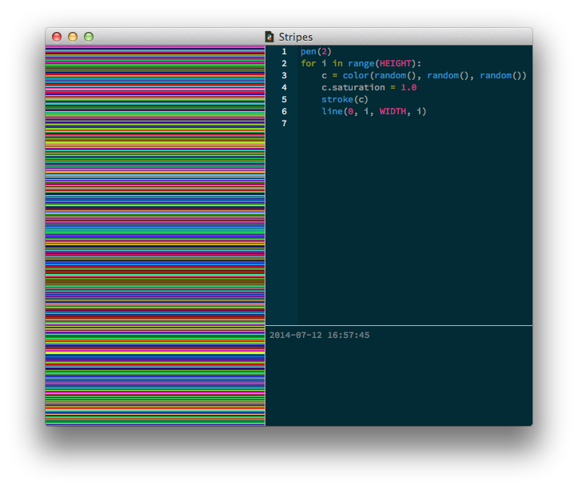

A number of the most commonly-used PlotDevice commands deal with color. In the Graphics State chapter we saw how fill() and stroke() could set the "ink" color based on named colors like "red" and "orange", but most of the time you'll want more control over the exact shade. You can also imagine wanting to use a "transparent" color; for instance when calling background(). PlotDevice gives you control over these parameters through a common syntax used by all the color-related commands.
The simplest way to call a color command is to pass it a string containing the name of a color. PlotDevice uses the same set of names supported by CSS. For instance, the following will set the color scheme to something truly blinding:
background('aqua')
fill('lawngreen')
stroke('deeppink')
If the string starts with a "#", it will be interpreted as a triplet of hex values corresponding to red, green, and blue values. You can use either 3- or 6-character values depending on the amount of precision you need (e.g., "#fab" will be expanded to "#ffaabb"):
fill('#f00') # 100% red
fill('#0000ff') # 100% blue
You can set greyscale values by passing a single number lying within the ‘current’ color range. By default this range is 0–1.0 (though later we'll see how you can customize this).
fill(0) # black stroke(1.0) # white background(.333) # dark grey
Colors don't have to be solid. You can add an additional argument to specify the opacity of the color between 0 (transparent) and 1.0 (opaque). You can also set the color to "clear" (0 opacity) by calling the command with None as its sole argument:
fill('saddlebrown', .75) # mostly solid brown
stroke(0, .1) # very faint black
background(None) # transparent
If you want to specify a non-greyscale color numerically, there are a number of ‘colorspaces’ to choose from. Include one of the colorspace constants as the first argument, then supply the appropriate number of ‘channel’ values to specify the color:
background(RGB, 0, 1.0, 0) # bright green fill(HSV, 0, 1.0, .25) # super-saturated dark red stroke(CMYK, 1, 0, 0, .2) # 100% cyan w/ 20% black
fill(CMYK, 0, 0, 0, 1, 0.9) # slightly transparent black stroke(HSV, 0, 1, 1, 0.1) # very faint red
Note that as in the prior example, you can optional add a final 0–1.0 arg to set the opacity to something other than the default (1.0).
Since including the colorspace in every call is a bit of a drag, PlotDevice keeps track of the ‘current’ color mode as part of the graphics state. If you call a color command without including a colorspace argument, the channel values you pass will be interpreted according to the current color mode.
By defualt, the mode is RGB, but you can modify this by calling the color() command with the colorspace of your choosing:
fill(0, 1, 0) # pure green (interpreted as r/g/b) color(HSV) fill(1, 1, 0) # black (interpreted as h/s/v) color(CMYK) fill(0, 0, 1, 0) # pure yellow (interpreted as c/m/y/k)
The color() command also allows you to change the range of values expected. By default, channel values run from 0–1.0. By passing a range argument, you can set the upper limit to whatever makes sense for your script. You can even change the mode and range in a single call:
color(range=255) fill(127,127,255) # violet (r/g/b) color(mode=CMYK, range=100) fill(100, 100, 100, 0) # ‘process’ black (c/m/y/k)
Note that the redefined range applies to opacity arguments as well as color channels.
Since colorspaces are so fluid, you might wonder how colors are generated when you export a PDF. Regardless of what mode you set using the color() command, the output adheres to the mode passed to the export() command. By default it will generate RGB documents, but you can call e.g., export("output.pdf", mode=CMYK) to override this.
This makes it easy to work with print documents since you don’t need to worry about the technical details, and can simply focus on finding the colors you like. Keep in mind though that not all RGB colors can be represented in CMYK, so your exports may lack some of the luster of their screen-based representation.
PlotDevice remembers the colors that you set and then keeps on using that fill or stroke color until you define a different one (see Graphics State for details). You can override these active colors on a per-object basis by including a fill or stroke keyword argument when calling a drawing command.
The values passed for these arguments use the same format as the color commands:
rect(0,0, 10,10, fill=('black', 0.5), stroke=(1,0,0))
arc(5, 20, 5, fill=None, stroke='green')
star(5,40, fill=.5, stroke=(CMYK, 1, 0, 0, 0))
If you can specify a color with a single value, you can omit the parentheses. Otherwise, enclose the set of args for the color in parens and separate them by commas.
The fill() and background() commands are special in that if you pass them two or more colors, a gradient will be created. Using the optional steps argument allows you to control the ‘speed’ of the transition from color to color. If included, it should be a list of numbers ranging from 0 to 1.0 – one value for each color in the gradient.
stroke('#aaa')
fill('black', 'white')
rect(20,20,75,75)
fill('black', 'white', steps=[.3,.6])
rect(20,110,75,75)
fill('black', 'red', 'white', steps=[0,.3,.6])
oval(20,200,75,75)
|
As you can see, a radial gradient is used by default. To use an axial gradient instead, include an angle keyword argument. The steps argument can be used to adjust the color transitions in the same manner as for radial gradients. Here, we're using angles measured in degrees, but you can switch to other units (such as radians) with the geometry() command.
stroke('#aaa')
fill('black', 'white', angle=0)
rect(20,20,75,75)
fill('black', 'white', angle=45, steps=[.3,.6])
rect(20,110,75,75)
fill('black', 'red', 'white', angle=180, steps=[0,.3,.6])
oval(20,200,75,75)
|
Radial gradients support an optional center argument which allows you to position the gradient using a relative coordinate scheme. Gradients always size themselves to just fit the bounding box of the Bezier path they're filling. By default, radial gradients are centered at (0,0), meaning the centroid of the bounding box. The center argument can be a list or tuple with values in the range (-1,-1) to (1,1) – top-left and bottom-right respectively.
Here's an example that uses a different center value for each rectangle. Also note that the gradient ranges from black to ‘transparent black’, allowing the background pattern to show through.
background(None)
fill('black', ('black',0), center=[-1,-1])
rect(20,20,75,75)
fill('black', ('black',0), center=[1,-1])
rect(100,20,75,75)
fill('black', ('black',0), center=[-1,1])
rect(20,100,75,75)
fill('black', ('black',0), center=[1,1])
rect(100,100,75,75)
|
Keep in mind that PDF documents don't support transparent gradients (I know, right?), so try to reserve transparency for bitmap exports.
In addition to "pure" colors, the fill() and background() commands can also work with image() patterns. When you pass an Image as part of a color-setting call, rather than being drawn to the canvas the image will be tiled to fit the shape being filled (or the entire canvas if used as a background pattern).
Here's an example using a set of 16×16 px pattern images from yesteryear:
background(image('macpaint-dark.png'))
with fill(image('macpaint-tile.png')):
poly(45,45,25, sides=5)
with fill(image('macpaint-thatch.png')):
rect(80,20,50,50)
|
In addition to letting you change the color mode & range, the color() command is also a factory for Color objects that can be pre-calculated and reused. The objects it returns have a number of properties that allow you to think in different color spaces at the same time. You can modify Color objects to your liking then pass them to any command that expects color arguments.
For example, if we wanted to draw a grid of lines in random colors, we would use the following code:
pen(1)
for i in range(HEIGHT):
c = color(random(), random(), random())
stroke(c)
line(0, i, WIDTH, i)
However, since each line now has a randomly sampled RGB color, some lines will tend to look dull and light. To crank up the colors, we can easily adjust the lines’ saturation without switching to a different color space. We'll also increase the pen's nib size to two since overlapping the lines makes them appear brighter as well.
pen(2)
for i in range(HEIGHT):
c = color(random(), random(), random())
c.saturation = 1.0
stroke(c)
line(0, i, WIDTH, i)

Colors objects have named properties for each of the color components. You can use either a single-character abbreviation or full name (e.g., .k or .black):
"#f00" or "#ff0000"
"#aa99ff", .75)
Whenever one of these is modified in your script, the color will be recalculated (merging your changes with the values of the unaffected color channels).
The key to generating harmonious and consistent colors is to make them not entirely random, but limited to a certain range. A common pitfall is to use all of the colors, since, you know, we can. But, more often than not, this doesn't result in a consistent design.
The HSV color mode is excellent for creating color harmony.
Consider the following example:
color(HSV)
nofill()
for i in range(10):
stroke(0.5, random(0.5), random(0.5,1.0))
pen(random(50))
radius = random(200)
oval(random(WIDTH), random(HEIGHT), radius, radius)
The hue is always the same, 0.5 or a hue of 180, which is cyan. Only the saturation and
brightness are varied a bit. This ensures we always have shades of blue, so they all fit
together. Saturation is limited between 0.0 and 0.5, for a faded look. The brightness is
furthermore limited between 0.5 and 1.0 (fifty to a hundred percent) so we get bright colors.
Take a look at the Colors library which has excellent support
for these kind of ‘color ranges’.